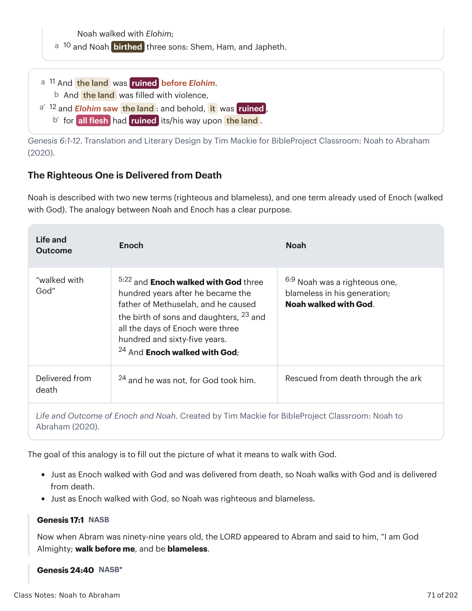
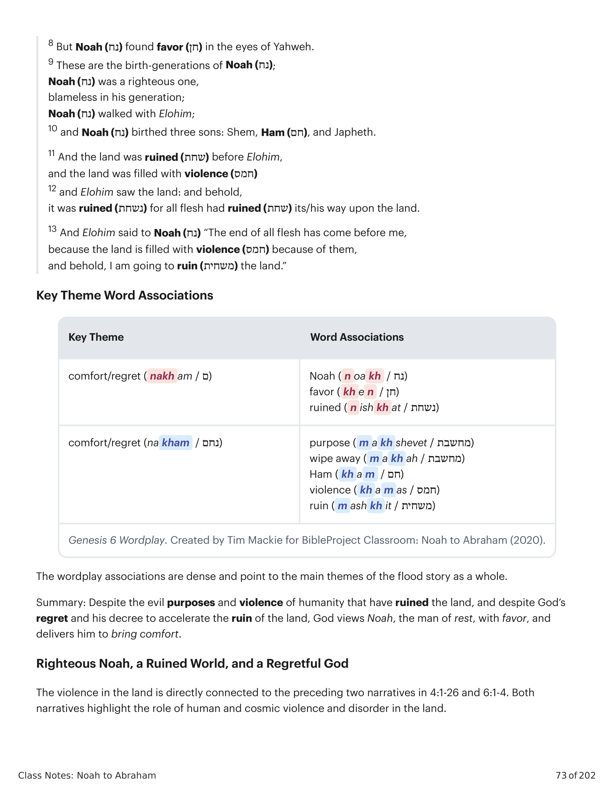

Sessão 13: A Rebelião dos Filhos de AdãoSession 13: The Rebellion of the Sons of Adam
Principais LiçõesKey Takeaways
Estar em aliança com Deus não tem nada a ver com ser etnicamente parte da família de Abraão. Significa imitar a confiança de Abraão em Deus.Being in covenant with God has nothing to do with being ethnically a part of Abraham’s family. It means imitating Abraham’s trust in God.
O clamor da terra arruinada é um motivo chave que nos mostra como a corrupção humana e o sofrimento promptam Deus a agir.The outcry of the ruined land is a key motif showing us how human corruption and suffering prompts God to act.
O dilúvio faz parte do padrão bíblico onde vemos o julgamento e a misericórdia de Deus trabalhando simultaneamente.The flood is part of the biblical pattern where we see God’s judgment and his mercy at work simultaneously.
A Rebelião dos Filhos de Adão: Tradução e Design Literário de Gênesis 6:5-12The Rebellion of the Sons of Adam: Translation and Literary Design of Genesis 6:5-12
5 E Yahweh viu que multiplicada (רב) estava a maldade da humanidade na terra, e todo propósito (מחשבת) dos planos de seu coração era apenas mau todo o dia, 6 e Yahweh se arrependeu (נחם) de ter feito a humanidade na terra, e ele estava angustiado em seu coração. 7 E Yahweh disse: “Eu vou apagar (מחה) a humanidade que criei da face da terra, da humanidade aos animais, às coisas rasteiras e às aves dos céus, pois eu me arrependo (נחם) de tê-los feito.” 8 Mas Noé (נח) encontrou favor (חן) aos olhos de Yahweh.5 And Yahweh saw that multiplied (רב) was the badness of humanity in the land, and every purpose (מחשבת) of the plans of his heart was only bad all the day, 6 and Yahweh regretted (נחם) that he made humanity in the land, and he was pained in his heart. 7 And Yahweh said, “I will wipe away (מחה) humanity that I created from the face of the ground, from humanity to animals to creeping things and to birds of the skies, for I regret (נחם) that I have made them.” 8 But Noah (נח) found favor (חן) in the eyes of Yahweh.
9 Estas são as gerações de Noé (נח); Noé (נח) era um justo, irrepreensível em sua geração; Noé (נח) andava com Elohim; 10 e Noé (נח) gerou três filhos: Sem, Cam (חם) e Jafé.9 These are the birth-generations of Noah (נח); Noah (נח) was a righteous one, blameless in his generation; Noah (נח) walked with Elohim; 10 and Noah (נח) birthed three sons: Shem, Ham (חם), and Japheth.
11 E a terra estava arruinada (שחת) diante de Elohim, e a terra estava cheia de violência (חמס), 12 e Elohim viu a terra: e eis que estava arruinada (נשחת), pois toda carne tinha arruinado (שחת) seu caminho sobre a terra. 13 E Elohim disse a Noé (נח): “O fim de toda carne chegou diante de mim, porque a terra está cheia de violência (חמס) por causa deles, e eis que eu vou arruinar (משחית) a terra.”11 And the land was ruined (שחת) before Elohim, and the land was filled with violence (חמס), 12 and Elohim saw the land: and behold, it was ruined (נשחת) for all flesh had ruined (שחת) its/his way upon the land. 13 And Elohim said to Noah (נח): “The end of all flesh has come before me, because the land is filled with violence (חמס) because of them, and behold, I am going to ruin (משחית) the land.”
O Justo é Livre da MorteThe Righteous One is Delivered from Death
Noé é descrito com dois termos novos (justo e irrepreensível) e um termo já usado de Enoque (andou com Deus). A analogia entre Noé e Enoque tem um propósito claro.Noah is described with two new terms (righteous and blameless), and one term already used of Enoch (walked with God). The analogy between Noah and Enoch has a clear purpose.

Vida e Resultado de Enoque e Noé. Por Tim Mackie para BibleProject Classroom: De Noé a Abraão (2020).Life and Outcome of Enoch and Noah. Created by Tim Mackie for BibleProject Classroom: Noah to Abraham (2020).
O objetivo dessa analogia é preencher a imagem do que significa andar com Deus. Assim como Enoque andou com Deus e foi livre da morte, assim também Noé anda com Deus e é livre da morte. Assim como Enoque andou com Deus, assim também Noé foi justo e irrepreensível.The goal of this analogy is to fill out the picture of what it means to walk with God. Just as Enoch walked with God and was delivered from death, so Noah walks with God and is delivered from death. Just as Enoch walked with God, so Noah was righteous and blameless.
Justo Noé, um Mundo Arruinado e um Deus ArrependidoRighteous Noah, a Ruined World, and a Regretful God
A violência na terra está diretamente conectada às duas narrativas anteriores em 4:1-26 e 6:1-4. Ambas as narrativas destacam o papel da violência humana e cósmica e da desordem na terra.The violence in the land is directly connected to the preceding two narratives in 4:1-26 and 6:1-4. Both narratives highlight the role of human and cosmic violence and disorder in the land.
Associações de Palavras-Chave TemáticasKey Theme Word Associations
As associações de palavras-chave são densas e apontam para os temas principais da história do dilúvio como um todo.The wordplay associations are dense and point to the main themes of the flood story as a whole.

Jogo de Palavras em Gênesis 6. Por Tim Mackie para BibleProject Classroom: De Noé a Abraão (2020).Genesis 6 Wordplay. Created by Tim Mackie for BibleProject Classroom: Noah to Abraham (2020).
Resumo: Apesar dos propósitos malignos e da violência da humanidade que arruinaram a terra, e apesar do arrependimento de Deus e seu decreto de acelerar a ruína da terra, Deus vê Noé, o homem de descanso, com favor, e o livra para trazer conforto.Summary: Despite the evil purposes and violence of humanity that have ruined the land, and despite God’s regret and his decree to accelerate the ruin of the land, God views Noah, the man of rest, with favor, and delivers him to bring comfort.
Pergunta de ReflexãoReflection Question
De que maneira a descrição de Noé como “justo” e “irrepreensível” molda a sua compreensão do que significa seguir Deus em um mundo corrompido?How does the description of Noah as “righteous” and “blameless” shape your understanding of what it means to follow God in a corrupted world?